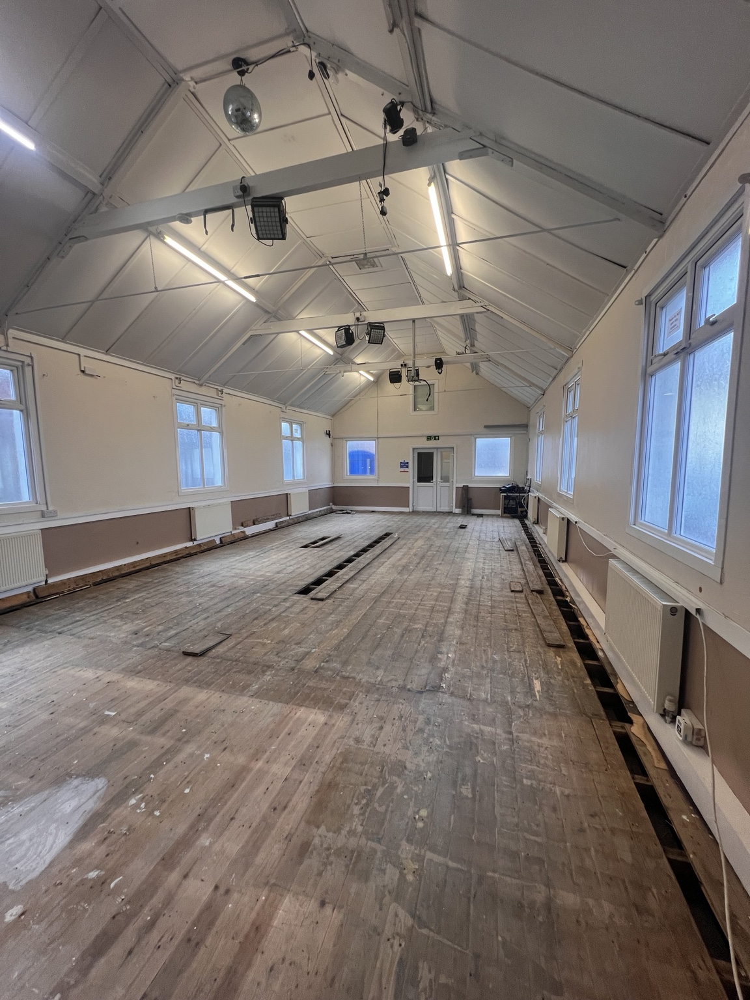

Our story
A new chapter,
rooted in Bagshot.
We’re a church family being established in the heart of Bagshot, seeking to follow Jesus and share his love with our community.
NEW LIFE / BAGSHOT
Faith, hope and life together.
New Life Church is being planted from Ascot Life Church, building on a long history of Christian witness in the centre of Bagshot. We want to be a church where people are known, cared for and encouraged to grow in faith.
Our vision is to see Bagshot transformed through the Gospel. We are rooted in Scripture, filled with the Spirit, formed in community and sent on mission.

A place with a story
A home in the heart of Bagshot.
We’re preparing the church building for its next chapter. This photograph shows the hall during building investigations, before refurbishment.